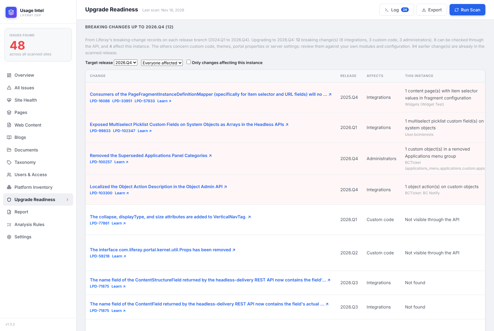

Pindai situs Liferay Anda untuk menemukan tautan rusak, konten yang tidak terpakai dan usang, akun yang lama tidak aktif, serta apa yang akan rusak saat Anda melakukan upgrade. Aplikasi ini berjalan di dalam Liferay dengan izin administrator yang sedang masuk dan akses hanya-baca, dan setiap temuan disertai cara memperbaikinya serta tautan ke dokumentasi Liferay. Aplikasi komunitas untuk penggunaan eksperimental.
Fitur
- Tanpa konfigurasi. Deploy satu zip, dan halaman dasbor yang hanya bisa dibuka administrator dibuat untuk Anda.
- Hanya-baca, ditegakkan oleh Liferay. Aplikasi OAuth 2-nya hanya memiliki cakupan baca, sehingga Liferay menolak setiap penulisan, apa pun izin pengguna itu sendiri. Tidak ada kata sandi yang dimasukkan atau disimpan.
- Kesehatan Situs. Tautan halaman, gambar, video, dan PDF yang rusak di halaman, konten web, blog, basis pengetahuan, papan pesan, wiki, dan menu navigasi, masing-masing dikonfirmasi ke Liferay, dengan laporan yang dapat diunduh.
- Kesiapan Upgrade. Perubahan yang merusak (breaking changes) Liferay antara rilis Anda dan rilis tujuan, diperiksa terhadap data Anda sendiri, ditambah fitur usang yang masih digunakan.
- Kebersihan konten dan akses. Konten yang tidak terpakai, usang, dan duplikat, folder kosong, tag dan kategori yang tidak terpakai, file besar, akun yang lama tidak aktif atau tidak pernah digunakan, serta persetujuan yang tertahan.
- Zip atau Docker. Letakkan zip di folder deploy, atau tambahkan ke image Liferay Anda dari image kontainernya.
Screenshot


